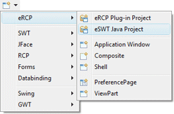
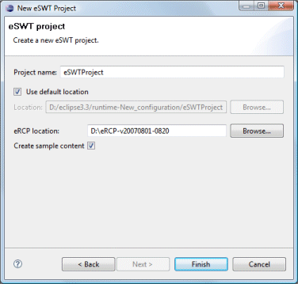
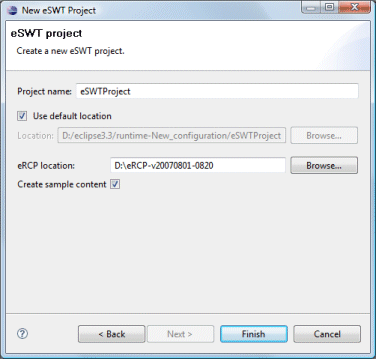

In order to use Eclipse SWT and JFace components,
you need to make sure that all of the appropriate SWT and JFace
jar files are on your classpath. The eSWT Java Project
wizard creates a standard Java project which has all of the needed
libraries added.
The wizard can be
selected from the drop down WindowBuilder wizard menu or from the
Eclipse New or New Project wizards.
To use the wizard, enter the project name and specify where the project should be located. In addition, specify the location of your eRCP installation, choose whether to create some initial sample content and hit the Finish button.
 

The wizard creates a Java project and generates content for the .classpath file similar to the following.
<?
xml version="1.0" encoding="UTF-8"?>
<classpath>
<classpathentry kind="src" path="src"/>
<classpathentry kind="con" path="org.eclipse.jdt.launching.JRE_CONTAINER"/>
<classpathentry kind="lib"
path="D:/eRCP-vXXX-XXX/win32/eRCP/plugins/org.eclipse.equinox.common_X.X.X.jar"/>
<classpathentry kind="lib"
path="D:/eRCP-vXXX-XXX/win32/eRCP/plugins/org.eclipse.core.runtime_X.X.X.jar"/>
<classpathentry kind="lib"
path="D:/eRCP-vXXX-XXX/win32/eRCP/plugins/org.eclipse.ercp.swt.../eswt-converged.jar"/>
<classpathentry kind="lib"
path="D:/eRCP-vXXX-XXX/win32/eRCP/plugins/org.eclipse.ercp.jface_X.X.X.jar"/>
<classpathentry kind="output" path="bin"/>
</classpath>
Note that before you can create an eSWT Java Project, you need to download and install a eRCP distribution from Eclipse.org:
- Download the Eclipse eRCP runtime.
- Install the Eclipse eRCP runtime by unzipping it. e.g., C:\eRCP-v20070801-0820.
Do not unzip this into your Eclipse directory (keep it separate). - Copy the eswt-converged.dll file from:
\eRCP-v20070801-0820\win32\eRCP\plugins\org.eclipse.ercp.swt.win32_1.0.2\os \win32\x86
to:
C:\Windows\System32